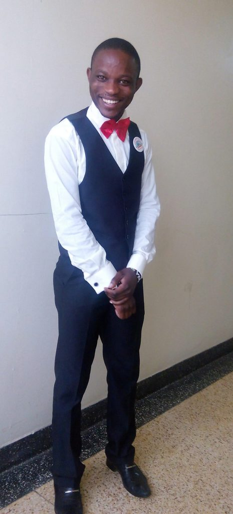
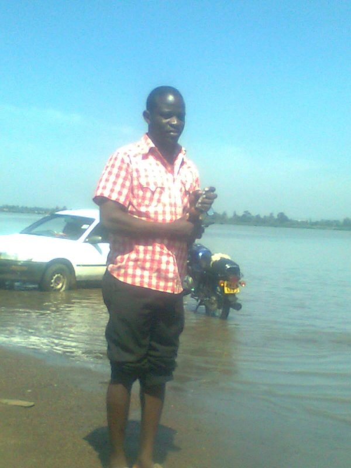
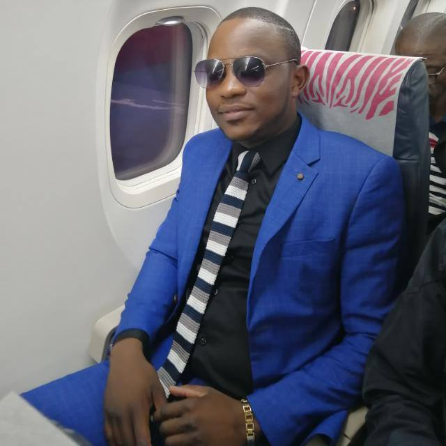

BIG DREAMS MADE POSSIBLE THROUGH ONLINE WORK
Hello guys, today I bring to you an inspirational story of my friend and
business partner Mr. Camillus Konjalo.
Camillus Konjalo is a very aggressive and confident gentleman
who believes in dreaming big and achieving big. Of course I went through
a normal life like any other Kenyan bred boy. My parents told me and constantly
encouraged me to go to school, get good grades, go to a prestigious university
and then secure a good white collar job and be rich or live a comfortable life for
that matter.
As a good son I heeded their advice and
hard in class and eventually graduated. This is when reality
hit me hard that this is the 21st century and a good education grade
doesn’t guarantee a good job nor does it guarantee a rich lifestyle.


After school I started job hunting but reality hit me when I realized that with or without
a decent job as a man and needed to make my own money. That’s how i found myself in Dunga
beach Kisumu as a fisherman. Funny how life is sometimes, right?
I later managed to secure a job in the insurance industry and moved from Kisumu to the big
city, Nairobi for which seemed like greener pastures. I was making Ksh.20, 000 each and
every month. Being in the city-Nairobi, this was not even enough for my basic needs.
I always found myself with debts and more debts at the end of each month. I was caught up
in a rat race and escaping it seemed impossible.
new in online work, 2014

In October 2014 I came across an online business opportunity. An opportunity that opened my eyes to an industry I didn’t even know it existed. An opportunity that has enabled me to achieve more in life and touch the lives of others. Am the kind of person who rarely lets opportunities pass me by. I embraced the network marketing profession with and decided to quit my frustrating insurance job and be my own boss.
The business started with me learn
ing as I earn. I was making some little thousands on weekly basis. The
business had its own ups and downs but through the mentorship of the
company and my business partners my earning grew.
I believe that we all have greatness within us and no dream is too big for us to achieve. I believe that if you can dream something then you can achieve it with the right attitude. But remember you can never climb the ladder of success with the crowd cheering you up nor can you do it with your hands in your pocket.
Yes I have gone through that journey, grown with the business both financially and in person. I have achieved a lot in the past few years in this business including being an investor, buying land, traveling and Of Course teaching other people’s lives.
Today I celebrate my first car courtesy of online work and a lot more
achievements including having mentored thousands of young Kenyans.
I encourage the courageous business minded people to join me and my
team in the race to end poverty through online work.

Regards
Moreen Opati
WhatsApp +254 746 783389
Your Partner in Success